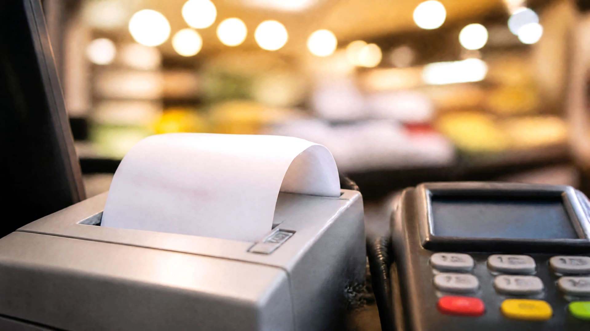
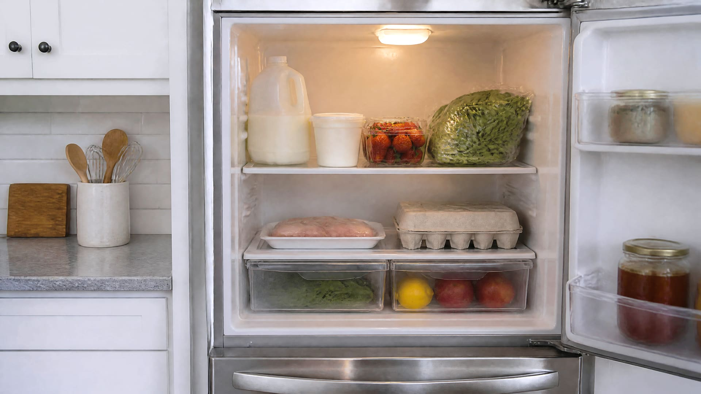
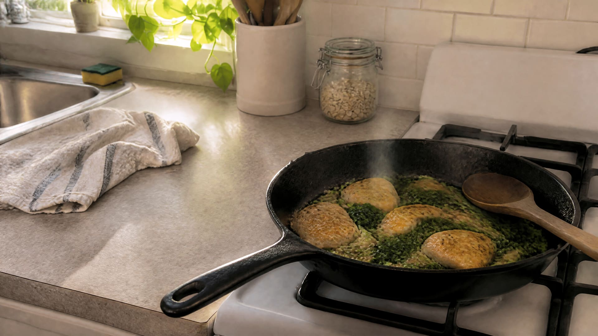
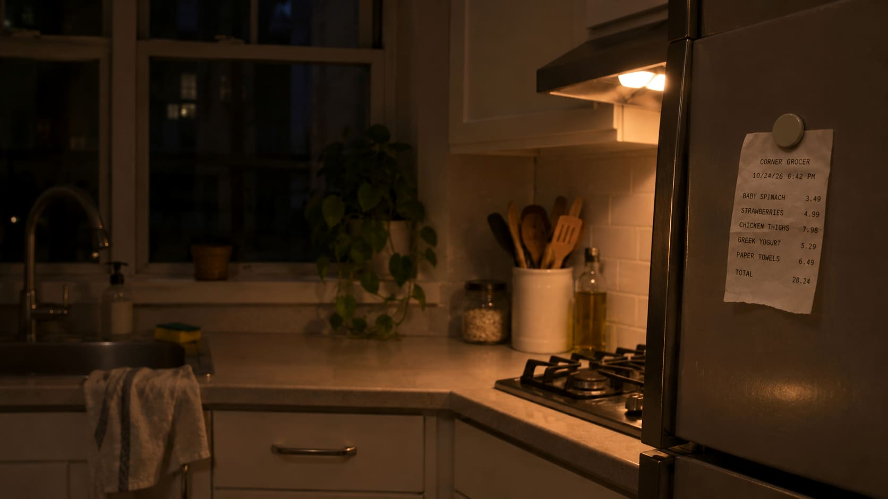

Everything starts with one receipt
-

Sat 6:42 PM
It starts with the receipt you’d usually throw away.
-
Sat 7:05 PM
Snap it once. Groceipt reads every line, so you never type a thing.
-

Sat 7:06 PM
Every food goes in with about how long it keeps. What to use first is on top.
-

Sat 7:30 PM
Dinner starts from whatever needs using up, within your diets and allergies.
-

Sun 8:00 PM
Your week in a few calm lines: what you spent, what you used up, how balanced your cart was.